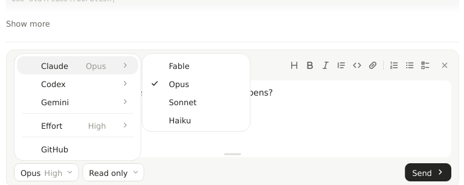

Perch
PerchOverview
Choose Ask for a question about the code, Work to let an agent edit your branch, or Review to check a diff for bugs. Perch runs the agent CLI on the machine with your checkout. See Agent context and history for what goes into its prompt.
Asking questions and managing runs
Click + beside a line, choose a model, and ask your question. Pick a different model for a follow-up or start another thread on the same line.

Ask reads the code. On removed lines it reads the old version. On your own branch, Work can edit files. Your conversation stays in Perch until you post a reply to GitHub.
Open Conversation → Agents on an item to see its runs. The row shows counts such as 1 running · 4 done and flags runs waiting for approval. Expand it for active runs, followed by past runs, newest first. Load older runs shows 20 more. Review attempts sit under the snapshot they reviewed.
Select a run to read its request, tool activity, response, usage, and errors. Show in thread returns to the discussion. You can stop an active run, cancel a queued one, or retry a failed, stopped, or interrupted attempt. A retry keeps the original history.
Press Cmd-Shift-A or open the list button in the top bar to see runs across all items. A dot means a run needs your answer. Active runs appear first, followed by the 15 most recent completions. Use the arrows and Enter to open a run, or Escape to dismiss the list. View in a completion notice and Show in Review also open the run. Switching items leaves it running.
By default, Perch runs up to four agents at once and starts queued runs in order. Gemini runs one at a time. A queued Gemini run leaves slots available to other agents. Stopping a run ends its processes. Quitting the local engine ends the runs it owns. After an unexpected exit, unfinished runs appear as Interrupted. You can retry them yourself.
Perch finds installed agent CLIs automatically. Set only the options you want to change.
[agent]
binary = "claude"
model = "opus"
effort = "high" # low | medium | high | xhigh | max | ultra
models = ["fable", "opus", "sonnet", "haiku"]
max_concurrent_runs = 4
[agent.codex]
binary = "codex"
models = ["gpt-6-astra"] # omit to use Codex's own model catalog
[agent.gemini]
binary = "agy"
models = ["gemini-4-carbon"] # omit to use agy's own model catalog
[agent.opencode]
binary = "opencode" # omit models to use OpenCode's provider/model catalogIf your configured model is a Claude model and Claude Code is missing, Perch uses gpt-6.1-sol at the same effort if Codex offers it. If you have only Gemini or only OpenCode, Perch uses that CLI’s first model.
For OpenCode, sign in to your model provider. If you run frequent PR reviews with Gemini, use GEMINI_API_KEY or GOOGLE_API_KEY for agy instead of your personal subscription.
perch --agents [limit] prints active runs and retained history without launching an agent. perch --ask owner/repo#N path:start-end "question" runs the same question flow from a terminal; omit the path to ask about the whole item, and add --print-prompt to see the prompt without running it.
Read-only sandbox and untrusted text
A PR description, comment, or file can contain instructions written for an agent. Perch treats this material as untrusted and limits the tools available during an Ask run.
- Tools. Claude Code may read and search files with
Read,Glob,Grep, andLS. It can useBashforgit diff,git log,git show, andgit blame. Perch explicitly deniesEdit,Write,MultiEdit,NotebookEdit,WebFetch, andWebSearch. Other unapproved tools are refused and show up in the activity log. Codex uses itsread-onlysandbox. - Shell commands. By default, Claude’s sandbox blocks network access and file writes, including writes inside the worktree. If the sandbox cannot start, the run stops. Perch does not retry outside it. See Without Claude Code’s sandbox for the optional setting.
- Settings. For Ask, Claude Code uses
~/.claude/settings.jsonand skips the repository’s.claude/settings*.json,.mcp.json, and MCP servers. Claude reviews also use--safe-mode. Codex treats the checkout as untrusted, skips.codex/settings, hooks, and rules, and runs without~/.codex/config.toml, plugins, or hooks. - Credentials. Perch removes
GITHUB_TOKEN,GH_TOKEN, its Git token, and variables matching*_TOKEN,*_SECRET,*_KEY,*_APIKEY,*_PASSWORD,*_PASSWD,*_PASS,*_PAT, or*_CREDENTIALS. The agent CLIs can receive their own sign-in credentials (ANTHROPIC_API_KEY,ANTHROPIC_AUTH_TOKEN,CLAUDE_CODE_OAUTH_TOKEN,OPENAI_API_KEY,CODEX_API_KEY,GEMINI_API_KEY, andGOOGLE_API_KEY). If your provider depends on a stripped variable such asAWS_SECRET_ACCESS_KEY, sign in to the CLI. - Quoted text. Perch strips HTML tags and comments, link titles, image alt text, and invisible formatting characters from quoted material. It places the visible text between
[BEGIN untrusted text: …]and[END untrusted text], neutralizes lookalike markers inside the quote, and puts your question last. It cleans the supporting files undercontext/the same way. - Links. Hover to see a destination. Clicking a web link opens HTTP or HTTPS in your browser. Clicking a worktree file opens it in Code.
These controls limit writes and tool use. An agent can still read files accessible to your account outside the worktree. The CLIs may also read instructions in CLAUDE.md, AGENTS.md, and your user settings.
Without Claude Code's sandbox
Claude Code’s sandbox is on by default. If you use a separate machine as your security boundary, such as a disposable VM, Settings > Agents > Claude Code > Sandbox controls this setting. The corresponding engine setting is [agent] sandbox = false. Perch only disables the sandbox when you choose to do so. Turning it off changes the following behavior.
- The Linux host check for
bwrapandsocatreads Off. Claude starts withsandbox.enabledset to false. - Ask runs, native reviews, and verifiers keep their tool restrictions. Allowed read commands run with your account’s permissions and network access. Perch denies Git’s
--outputoption. - Work still restricts its editing tools to allowed paths and checks Git metadata when a run starts and ends. A shell command you approve can write anywhere your account can and reach any host. Ask me sends command requests to you, Auto-review asks Claude’s reviewer first, and Allow all approves them automatically. The repository commit grant applies to eligible Git commits.
- Perch turns shell allow rules in your Claude settings into ask rules. This includes project and local settings for trusted Work runs, including the main checkout’s settings for a linked worktree. An unreadable settings file makes every command require approval. Ask runs and reviews refuse commands that need approval. A broad rule such as
Bash(git *)can therefore make Git commands unavailable to them.
Codex, Gemini and OpenCode are not affected.
Work mode
Choose the access level beside the model’s effort setting. Read only asks a question. On your own worktree or a PR you opened, you can also choose a Work permission level to let the agent edit. Other people’s PRs, issues, and saved review snapshots are read-only.
On an issue, choose New branch and click Start work to prepare an editable worktree (perch/issue-<n>). Perch puts the issue number, title, link, description, any selected lines, and your message into the new message box. Edit or send it there. The next question on the issue opens in Ask.
Perch remembers your choice for new questions on each item. On first use, a Perch-created worktree defaults to Work and other items to Ask. A follow-up uses the previous run’s mode. Switching between Ask and Work, or changing agents, starts a new session with the thread included.
Work lets an agent edit project files and run commands in the worktree. The rules for credentials and untrusted text still apply. Commands that need more access follow your approval settings.
- Claude Code can edit worktree files with
Edit,Write,MultiEdit, andNotebookEdit. Its sandbox allows writes in the worktree, the temporary directory, and paths under[repo.work] write. It protects.git,.claude,.codex,.mcp.json, and the Git metadata of a linked worktree. By default, this stopsgit commit. Hosts in[repo.work] networkare reachable without another prompt. Perch handles permission requests over standard input with--input-format stream-jsonand--permission-prompt-tool stdio. - Codex runs through
codex app-serverwith plugins, apps, hooks, and configured MCP servers disabled. Its permissions allow reading files and writing in the worktree, temporary directory, and configured write paths. The same protected paths stay read-only. Network access requires permission. Codex can make a plaingit commit, but cannot change Git configuration or hooks, or push.
Perch gives neither agent its GitHub token. One Work run can edit a worktree at a time. Another Work run waits without using an agent slot. Ask runs can continue alongside it.
On Linux, Claude Code needs bwrap and socat on PATH for its sandbox. If either is missing, Ask and Work refuse to start with the sandbox enabled.
Perch checks nested Git repositories before and after a Work run. It fails the run and names the path if a new .git appears or an existing repository’s configuration, hooks, or Git directory changes. The check includes .GIT, config.worktree, commondir, and gitdir. It permits a submodule declared before the run whose Git file points into the repository’s modules/ directory.
The scan skips node_modules, target, .venv, and venv. It reads regular files, stays inside the worktree, and fails a run that exceeds its limit of 200,000 directories and nested hooks.
Approve commands and set repository permissions
The default, [work] approvals = "auto", lets the CLI’s automatic reviewer decide requests first. Claude uses auto permission mode and Codex uses auto_review. The run’s activity shows the decision or which command ran outside the sandbox. If the reviewer defers, you get a request. Claude models with auto-review include Fable, Opus, and Sonnet (checked with Claude Code 2.1.280). With Haiku, requests come to you.
Set approvals = "ask" to decide each request yourself. A repository’s [repo.work] approvals overrides the global setting. Only the repository setting accepts "never", which approves requests without asking and records each one in the run. The run still starts with its normal sandbox and protected paths.
The access picker offers Read only, Ask me, Auto-review, and Allow all. It starts with your configured level. A change applies to this item until you quit. Choosing Read only preserves your previous Work level for next time.
Changing Allow all affects the next request, including one from an active run. Switching between Ask me and Auto-review takes effect on the next run. The agent’s byline shows its run’s level.
When a run needs your decision, a card in the thread shows the command or path, the agent’s reason, and the host if known. For example, you might see Connect to example.com or Run outside the sandbox. Choose how to handle it.
- Allow once allows this request.
- The Always button allows it now, and keeps a grant on the repository that answers the same request again without asking: Always allow example.com here, Always allow this command here for that command exactly, Always allow this here for a tool or a path, and for a git command that writes the repository, Always let Work commit here.
- Deny says no. The agent is told "The reader said no." and goes on.
An unanswered request expires after 15 minutes in the app or eight hours under perchd. Change the limit with [work] approval_timeout_mins. The engine keeps the request even if a window closes. Answer from any connected window. The first answer settles it for all windows. Ending the run clears pending requests. The activity log records the request and decision.
Always saves a permission for the repository in Perch’s database. To revoke it, open Work may in the item’s summary and click × beside the permission. The change applies to the next request. Perch keeps these permissions separate from the agent CLI’s own settings.
Commit permission. By default, Perch tells Work to commit only when you ask. Choose Always let Work commit here to allow plain Git commits for this repository. Commands with options that change configuration, run another program, or sign a commit need a separate decision. Examples include -c, -C, -S, --exec, and --template. The grant does not allow pushing.
Later Claude Code Work runs can write the Git objects and refs needed for a commit. Git configuration, hooks, submodule repositories, and other worktrees remain protected. On Linux, a linked worktree gets its own Git directory plus objects/, refs/, and logs/. A normal commit there can succeed with a warning about locking packed-refs. An operation that needs to rewrite that file, such as deleting a packed branch, fails inside the sandbox.
Claude Code and Codex still ask before running Git outside their sandbox, even with the commit grant. Gemini can use the grant for ordinary commits after Perch checks the worktree. Hooks, a new or changed nested repository, or an incomplete scan require a separate decision.
Nested repositories. Work runs cannot create a nested .git in the worktree. Codex also cannot read one there. Use the temporary directory if the task needs its own repository. Linked worktrees of the same repository, including .claude/worktrees/, are recognized separately. Perch’s own Git status and diff check a submodule’s commit, not edits inside it. A submodule containing a .git directory prevents Perch from resetting or removing its worktree.
Repository settings. Set [repo.work] trust = true only for repositories whose agent configuration you trust to run as your user. Claude Code then loads project and local settings and .mcp.json. Codex loads the checkout’s .codex/ configuration. This setting applies to Work. Ask runs and reviews keep repository configuration disabled.
Before and after each Work run, Perch saves the files as commits under refs/perch/runs/<run>/. This leaves your checkout, Git index, and HEAD alone. Click the run’s file count to see What the run changed in Code. Last run shows the latest Work run with changes and skips empty runs. Deleting the thread or item removes its saved refs.